Part 1
Thread Repair (Part 1)
Tools Required
* J 42385-2000 Thread Insert Kit
* J 42385-2030 M11 x 2.0 Cylinder Head Bolt - Northstar/Premium V8 Thread Repair Kit
* J 43965 Thread Repair Extension Kit
The thread repair process involves a solid, thin walled, self-locking, carbon steel, bushing type insert. During the insert installation process, the installation driver tool cold-rolls the bottom internal threads and expands the bottom external threads of the insert into the base material. This action mechanically locks the insert into place.
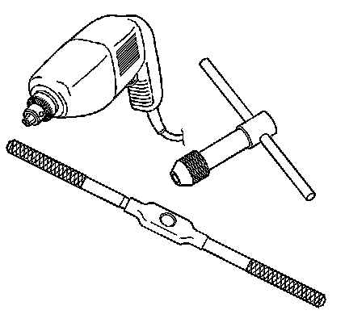
The drill bit and counter bore tool from the tool kit J 42385-2000 and J 42385-2030 is designed for use with either a suitable tap wrench or drill motor. Limited access and larger hole repair may process better using a tap wrench. An extension from kit J 43965 may also be necessary to drive the thread repair tooling dependent on access to the hole being repaired. Use only a tap wrench when tapping the hole and during installation of the insert.
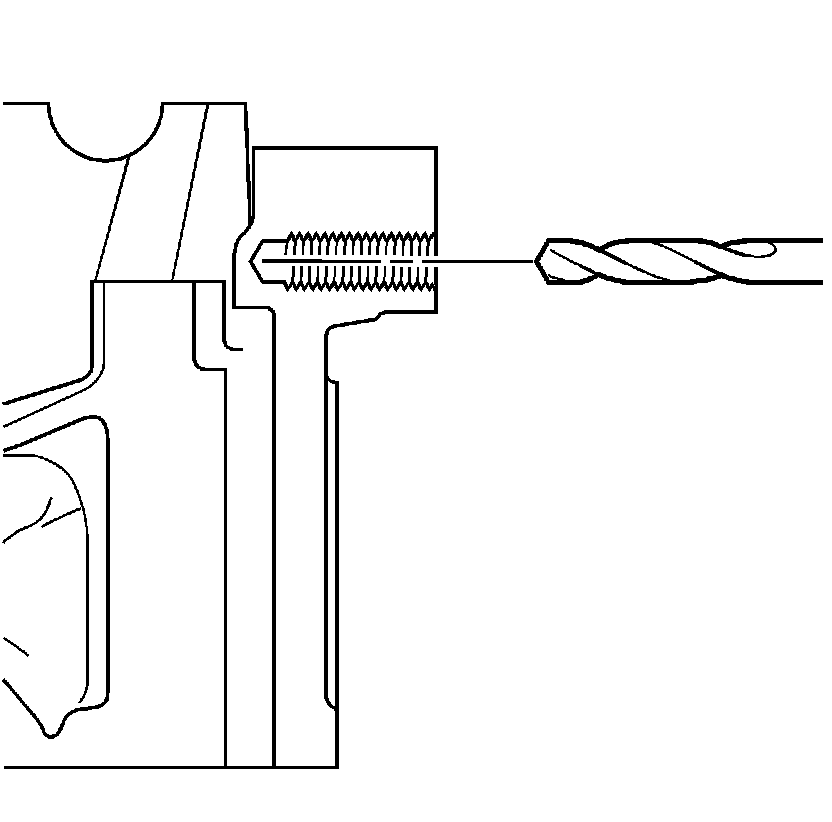
It is critical that the drilling, counterboring and tapping of the hole to be repaired follows the same centerline as the original hole.
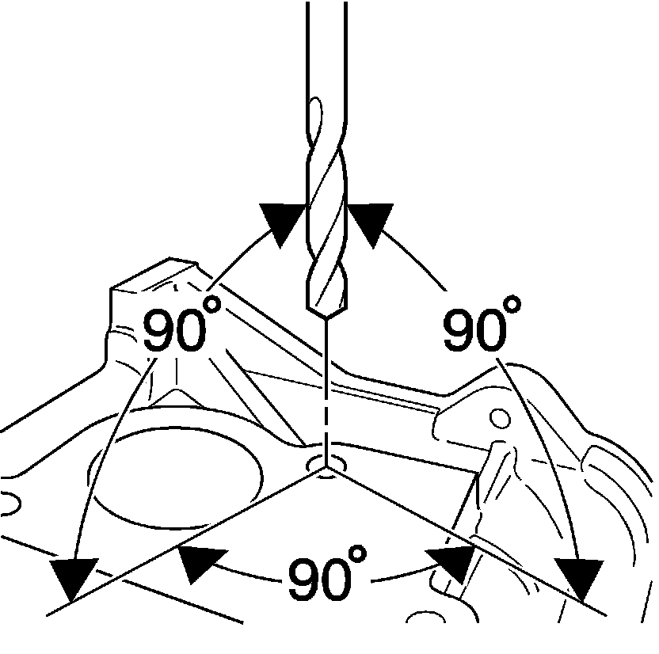
During the drilling and tapping of the hole being repaired ensure the tooling is consistently machining perpendicular to the surface of the base material.
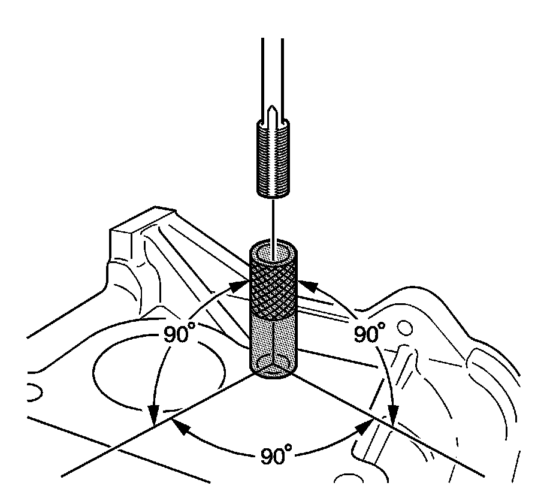
If the threaded hole being repaired has a base surface perpendicular to the hole centerline, tapping guides are available to aid in tapping the hole.
Standard Thread Repair - Flush Hole
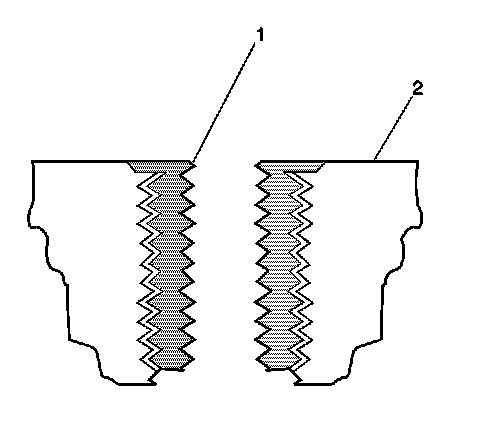
Caution: Refer to Safety Glasses Caution (Safety Glasses Warning) .
Important: The use of a cutting type fluid GM P/N 1052864, (Canadian P/N 992881), WD 40(R) or equivalent is recommended when performing the drilling, counterboring and tapping procedures.
When installed to the proper depth, the flange (1) of the insert will be seated against the counterbore of the drilled/tapped hole and just below the surface (2) of the base material.
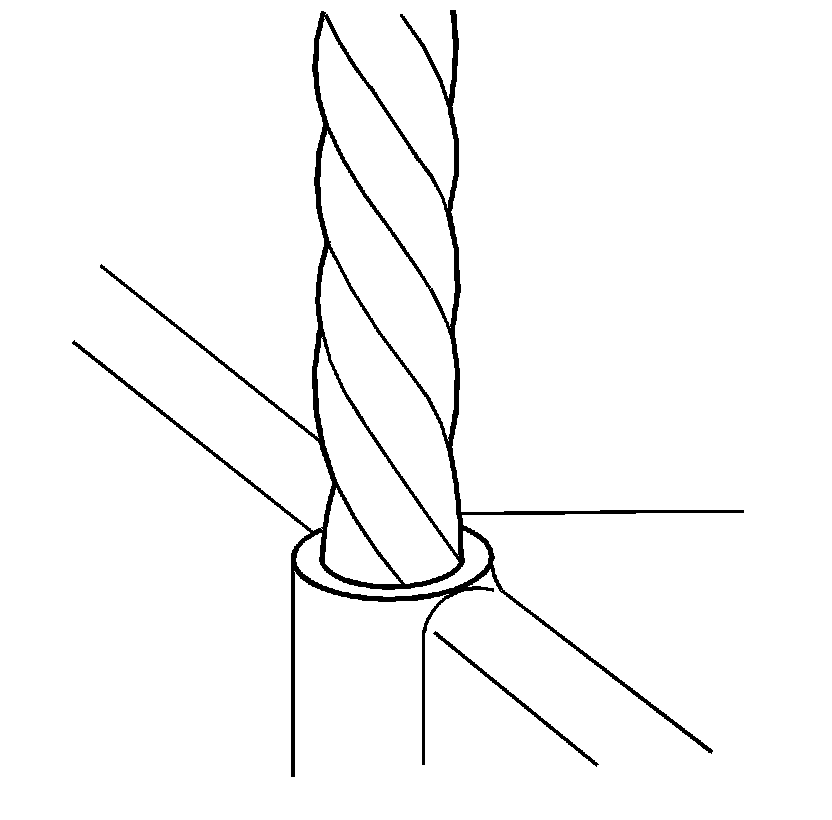
Important:
* During the drilling process, it is necessary to repeatedly remove the drill and clean chips from the hole and the flutes of the drill.
* DO NOT drill any further than the original hole depth.
1. Drill out the threads of the damaged hole.
* M6 inserts require a minimum drill depth of 15 mm (0.59 in).
* M8 inserts require a minimum drill depth of 20 mm (0.79 in).
* M10 inserts require a minimum drill depth of 23.5 mm (0.93 in).
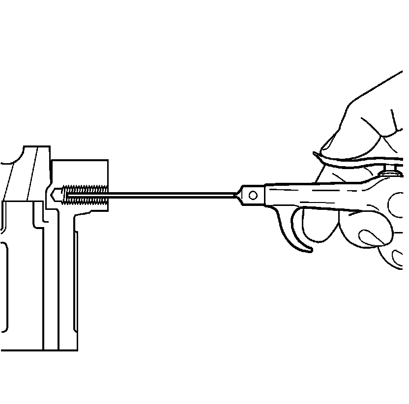
Important: All chips must be removed from the drilled hole prior to tapping.
2. Using compressed air, clean out any chips.
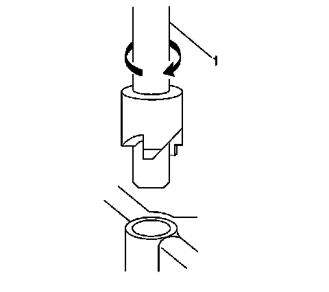
Important: A properly counterbored hole will show a slight burnishing on the surface of the base material for 360 degrees around the drilled hole.
3. Counterbore the drilled hole to the full depth permitted by the tool (1).
Important: All chips must be removed from the drilled hole prior to tapping.
4. Using compressed air, clean out any chips.
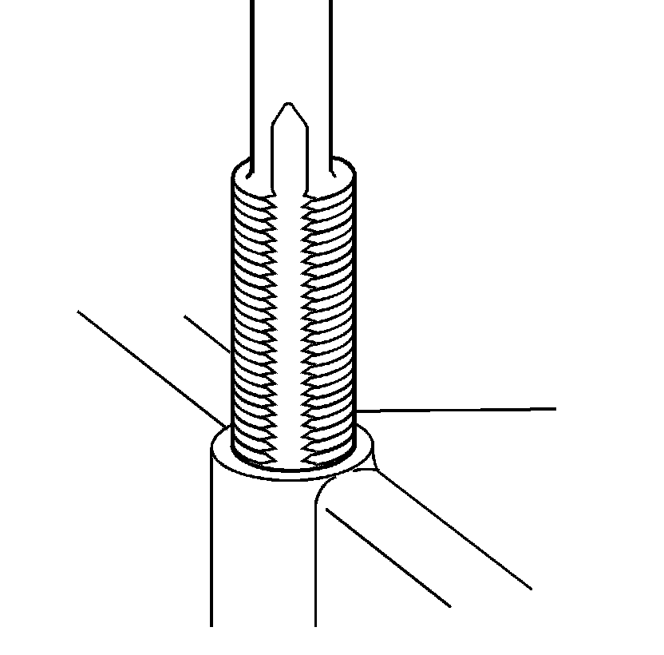
Important:
* During the tapping process, it is necessary to repeatedly remove the tap and clean chips from the hole and the flutes of the tap.
* Ensure the tap has created full threads at least to the depth equal to the insert length.
5. Using a suitable tapping wrench, tap the threads of the drilled hole by hand only.
* M6 inserts require a minimum tap depth of 15 mm (0.59 in).
* M8 inserts require a minimum tap depth of 20 mm (0.79 in).
* M10 inserts require a minimum tap depth of 23.5 mm (0.93 in).
Important: All chips must be removed from the tapped hole prior to insert installation.
6. Using compressed air, clean out any chips.
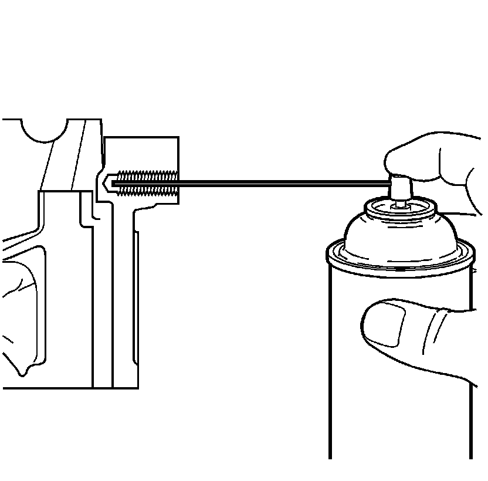
7. Spray cleaner GM P/N 12346139, GM P/N 12377981 (Canadian P/N 10953463) or equivalent into the tapped hole.
Important: All chips must be removed from the tapped hole prior to insert installation.
8. Using compressed air, clean out any chips.
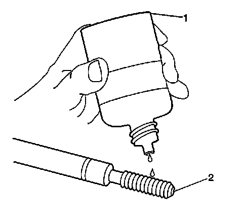
Important: Do not allow oil or other foreign material to contact the outside diameter (OD) of the insert.
9. Lubricate the threads of the driver installation tool (2) with the driver oil J 42385-110 (1).
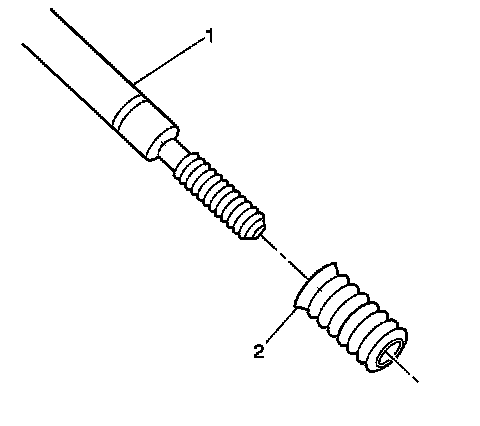
10. Install the insert (2) onto the driver installation tool (1).
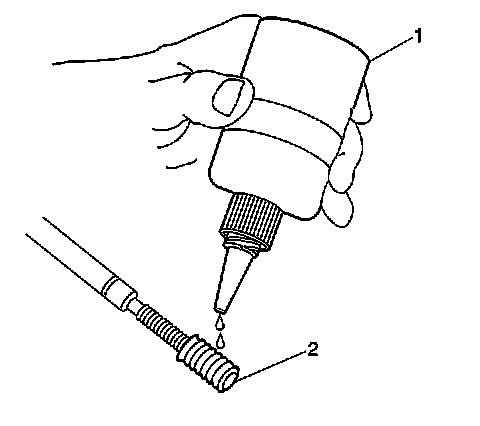
11. Apply threadlock sealant GM P/N 12345493, (Canadian P/N 10953488), J 42385-109, LOCTITE 277(R) or equivalent (1) to the insert OD threads (2).
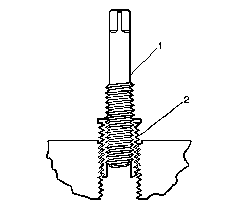
12. Install the insert (2) into the tapped hole by hand only.
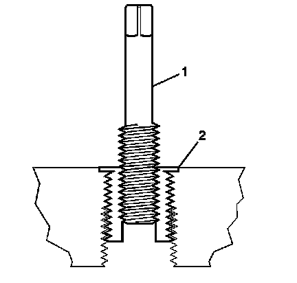
Important: If the insert will not thread down until the flange contacts the counterbored surface, remove the insert immediately with a screw extracting tool and inspect the tapped hole for any remaining chips and/or improper tapping.
13. Install the insert until the flange (2) of the insert contacts the counterbored surface.
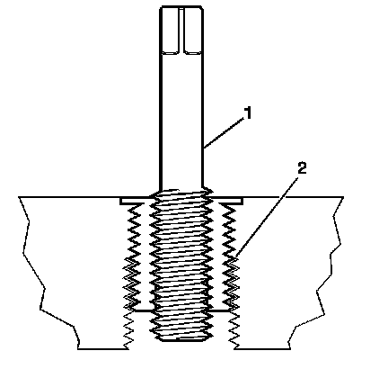
Important: The driver installation tool will tighten up before screwing completely through the insert. This is acceptable. The threads at the bottom of the insert are being formed and the insert is mechanically locking the insert into the base material threads.
14. Continue to rotate the driver installation tool (1) through the insert (2).
15. Inspect the insert for proper installation into the tapped hole. A properly installed insert (1) will be either flush or slightly below flush with the surface of the base material (2).
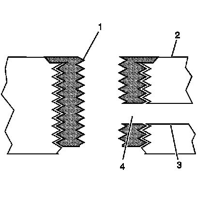
16. Any installed insert that restricts or blocks an oil or engine coolant passage (3) will need to have the oil or engine coolant passage drilled out (4) to the original size of the oil or engine coolant passage. After drilling the restriction or blockage, clean out any chips and thread the installation driver tool through the insert again to remove any burrs caused by the drilling of the oil or engine coolant passage.
Recessed Thread Repair
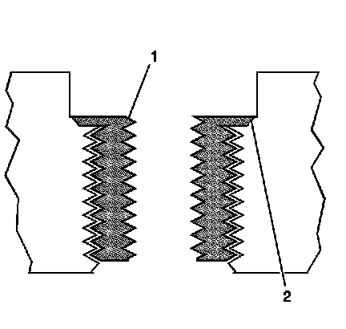
Caution: Refer to Safety Glasses Caution (Safety Glasses Warning) .
Important:
* The use of a cutting type fluid GM P/N 1052864, (Canadian P/N 992881), WD 40(R) or equivalent is recommended when performing the drilling, counterboring and tapping procedures.
* Do NOT remove the original stop collar from a counterbore drill.
When installed to the proper depth, the flange of the insert (1) will be seated against the counterbore (2) of the drilled/tapped hole.
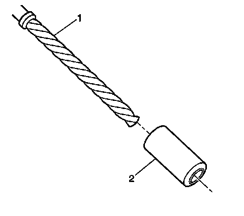
1. Install a stop collar (2) on the counterbore drill (1), if required.
Important:
* During the drilling process, it is necessary to repeatedly remove the drill and clean chips from the hole and the flutes of the drill.
* Drill the hole until the stop collar contacts the surface of the base material.
2. Drill out the threads of the damaged hole.
Important: All chips must be removed from the drilled hole prior to tapping.
3. Using compressed air, clean out any chips.
Important:
* During the tapping process, it is necessary to repeatedly remove the tap and clean chips from the hole and the flutes of the tap.
* Ensure the tap has created full threads at least to the depth equal to the insert length.
4. Using a suitable tapping wrench, tap the threads of the drilled hole by hand only.
Important: All chips must be removed from the tapped hole prior to insert installation.
5. Using compressed air, clean out any chips.
6. Spray cleaner GM P/N 12346139, GM P/N 12377981 (Canadian P/N 10953463) or equivalent into the tapped hole.
Important: All chips must be removed from the tapped hole prior to insert installation.
7. Using compressed air, clean out any chips.
Important: Do not allow oil or other foreign material to contact the OD of the insert.
8. Lubricate the threads of the driver installation tool (2) with the driver oil J 42385-110 (1).
9. Install the insert (2) onto the driver installation tool (1).
10. Apply threadlock sealant GM P/N 12345493, (Canadian P/N 10953488), J 42385-109, LOCTITE 277(R) or equivalent (1) to the insert OD threads (2).
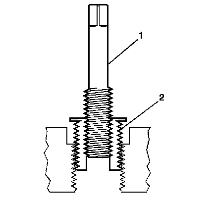
11. Install the insert (2) into the tapped hole by hand only.
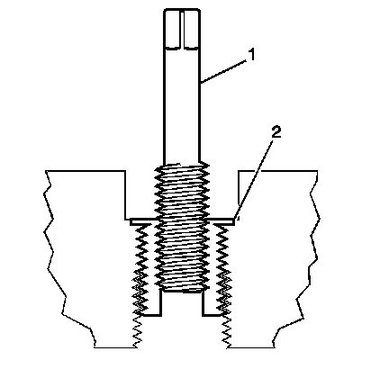
Important: If the insert will not thread down until the flange contacts the counterbored surface remove the insert immediately with a screw extracting tool and inspect the tapped hole for any remaining chips and/or improper tapping.
12. Install the insert until the flange (2) of the insert contacts the counterbored surface.
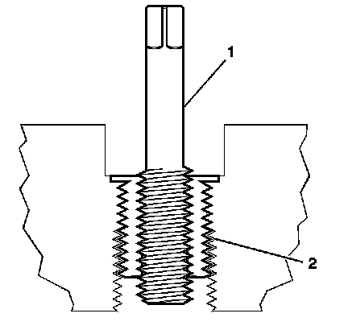
Important: The driver installation tool will tighten up before screwing completely through the insert. This is acceptable. The threads at the bottom of the insert are being formed and the insert is mechanically locking the insert into the base material threads.
13. Continue to rotate the driver installation tool (1) through the insert (2).
14. Inspect the insert (1) for proper installation (2) into the tapped hole.
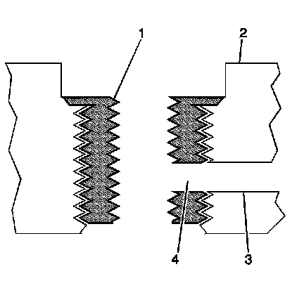
15. Any installed insert that restricts or blocks an oil or engine coolant passage (3) will need to have the oil or engine coolant passage drilled out (4) to the original size of the oil or engine coolant passage. After drilling the restriction or blockage, clean out any chips and thread the installation driver tool through the insert again to remove any burrs caused by the drilling of the oil or engine coolant passage.
Tapered Pipe Thread Repair
The thread repair insert for tapered pipe threads is coated with a clear silver zinc coating.
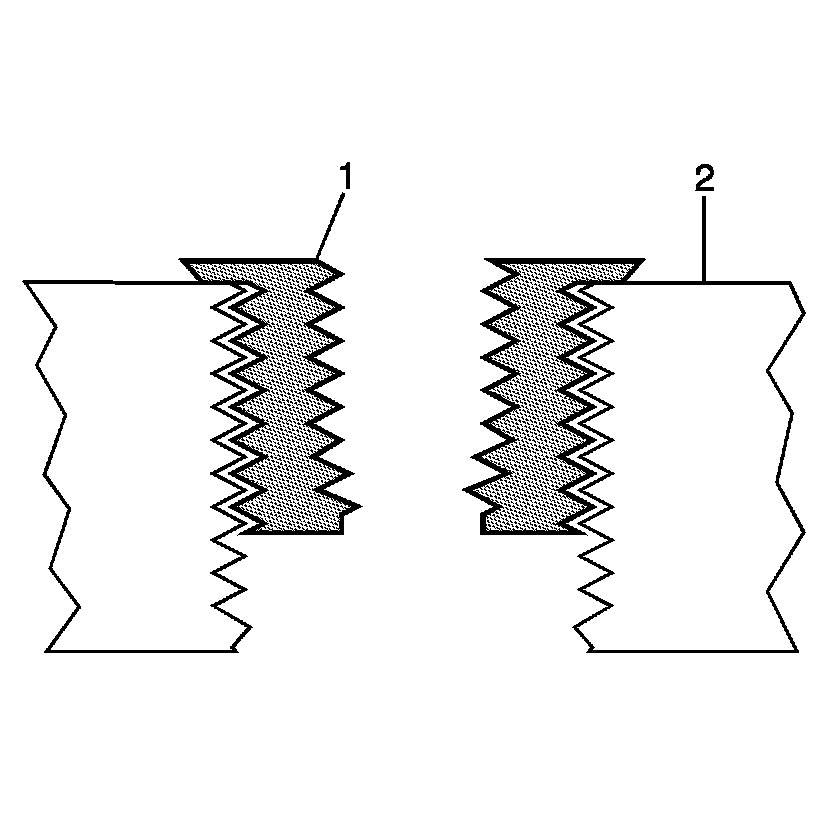
Caution: Refer to Safety Glasses Caution (Safety Glasses Warning) .
Important: The use of a cutting type fluid GM P/N 1052864, (Canadian P/N 992881), WD 40(R) or equivalent is recommended when performing the drilling, counterboring and tapping procedures.
When installed to the proper depth, the flange (1) of the insert will be seated against surface (2) of the base material of the drilled/tapped hole.
Important:
* During the drilling process, it is necessary to repeatedly remove the drill and clean chips from the hole and the flutes of the drill.
* Drill the hole until the stop collar contacts the surface of the base material.
1. Drill out the threads of the damaged hole.
Important: All chips must be removed from the drilled hole prior to tapping.
2. Using compressed air, clean out any chips.
Important:
* During the tapping process, it is necessary to repeatedly remove the tap and clean chips from the hole and the flutes of the tap.
* Ensure the tap has created full threads at least to the depth equal to the insert length.
3. Using a suitable tapping wrench, tap the threads of the drilled hole by hand only.
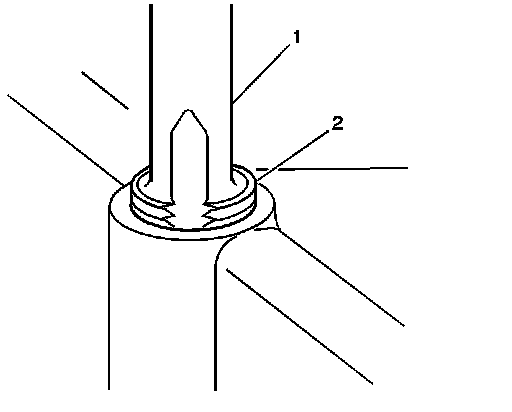
4. Tap the drilled hole until the threads at the top of the tap (2) are down to the surface of the base material.
Important: All chips must be removed from the tapped hole prior to insert installation.
5. Using compressed air, clean out any chips.
6. Spray cleaner GM P/N 12346139, GM P/N 12377981 (Canadian P/N 10953463) or equivalent into the tapped hole.
Important: All chips must be removed from the tapped hole prior to insert installation.
7. Using compressed air, clean out any chips.
Important: Do not allow oil or other foreign material to contact the OD of the insert.
8. Lubricate the threads of the driver installation tool (2) with the driver oil J 42385-110 (1).
9. Install the insert (2) onto the driver installation tool (1).
10. Apply threadlock sealant GM P/N 12345493, (Canadian P/N 10953488), J 42385-109, LOCTITE 277(R) or equivalent (1) to the insert OD threads (2).
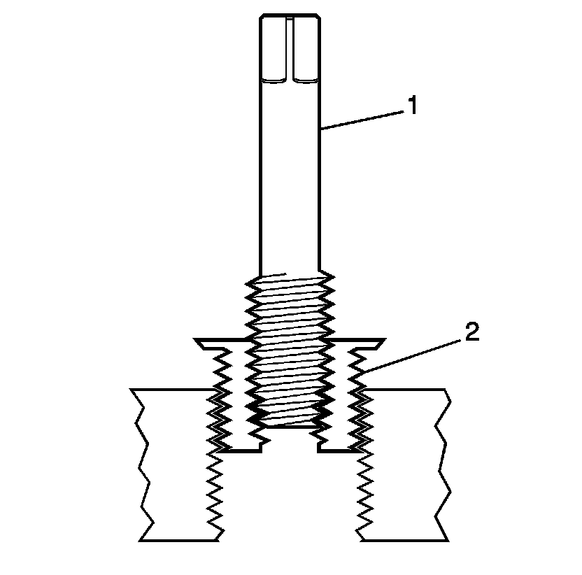
11. Install the insert (2) into the tapped hole by hand only.
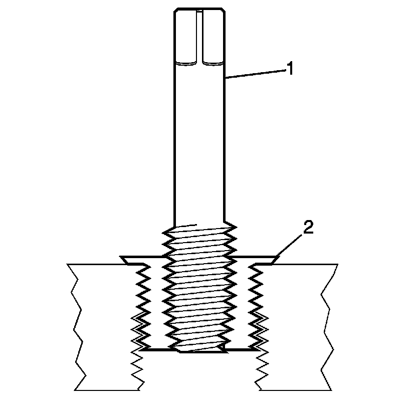
Important: If the insert will not thread down until the flange contacts the surface of the base material remove the insert immediately with a screw extracting tool and inspect the tapped hole for any remaining chips and/or improper tapping.
12. Install the insert until the flange (2) of the insert contacts the surface of the base material.
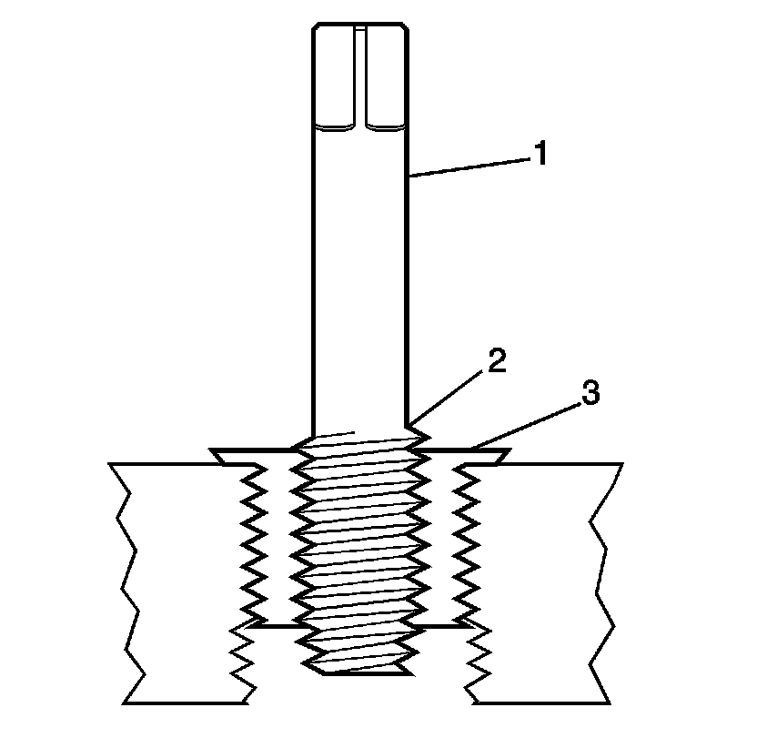
Important: The driver installation tool will tighten up before screwing completely through the insert. This is acceptable. The threads at the bottom of the insert are being formed and the insert is mechanically locking the insert into the base material threads.
13. Continue to rotate the driver installation tool (1) until the top of the threaded section (2) is level with the top of the insert (3).
14. Inspect the insert (1) for proper installation (2) into the tapped hole.
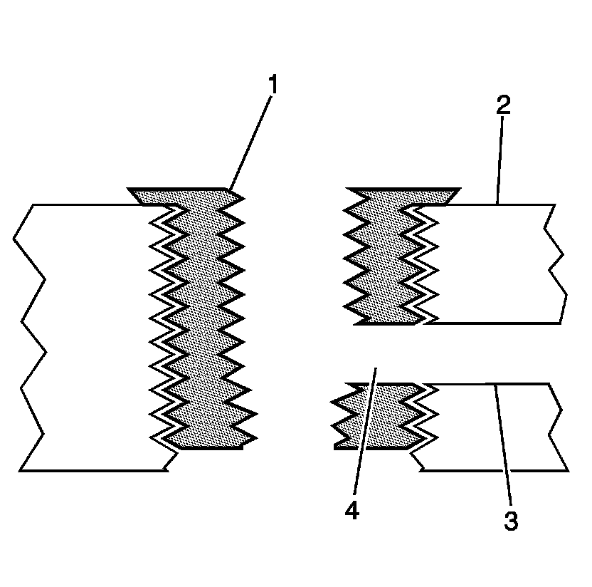
15. Any installed insert that restricts or blocks an oil or engine coolant passage (3) will need to have the oil or engine coolant passage drilled out (4) to the original size of the oil or engine coolant passage. After drilling the restriction or blockage, clean out any chips and thread the installation driver tool through the insert again to remove any burrs caused by the drilling of the oil or engine coolant passage.